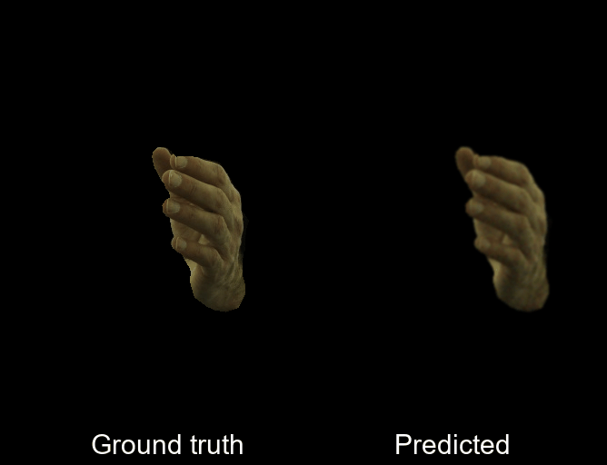
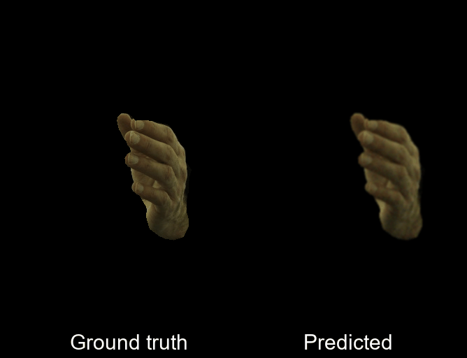
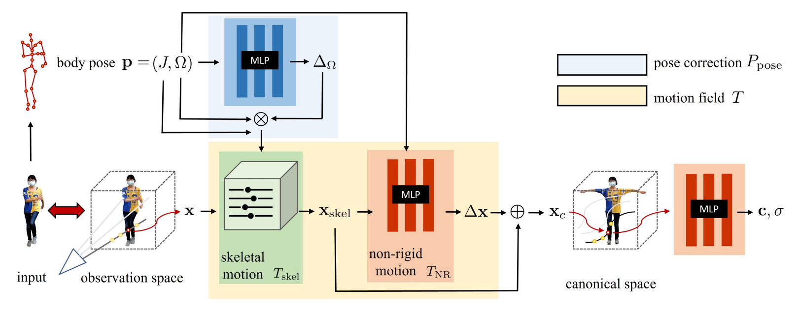
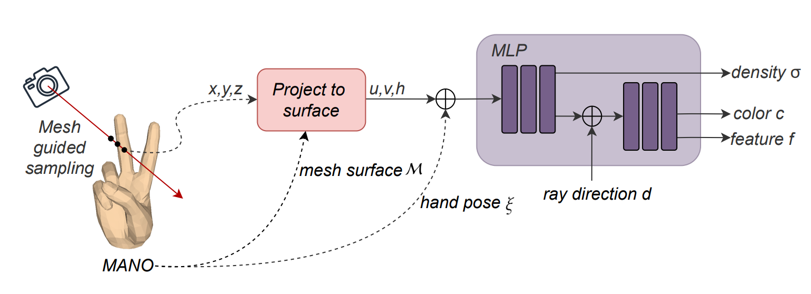
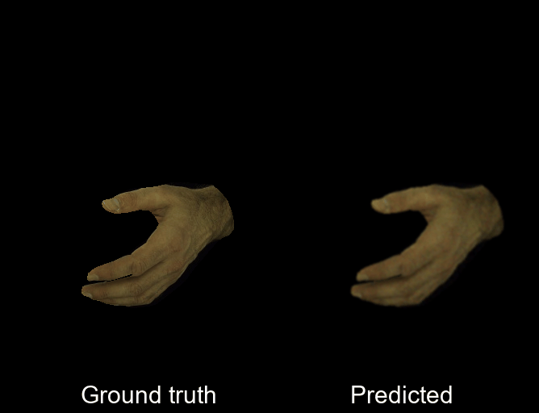
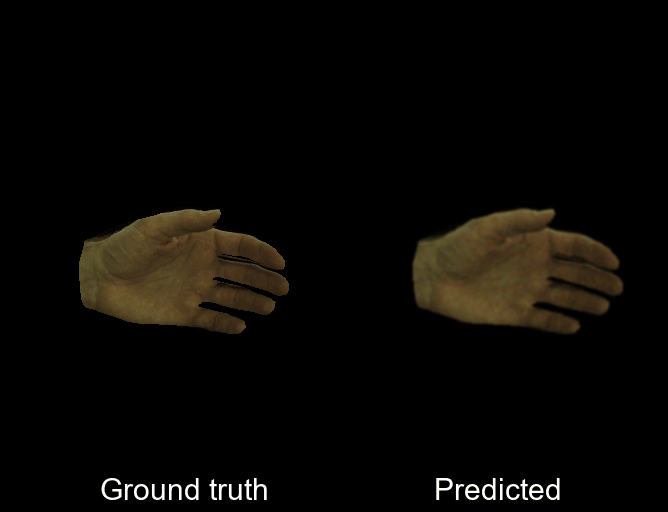
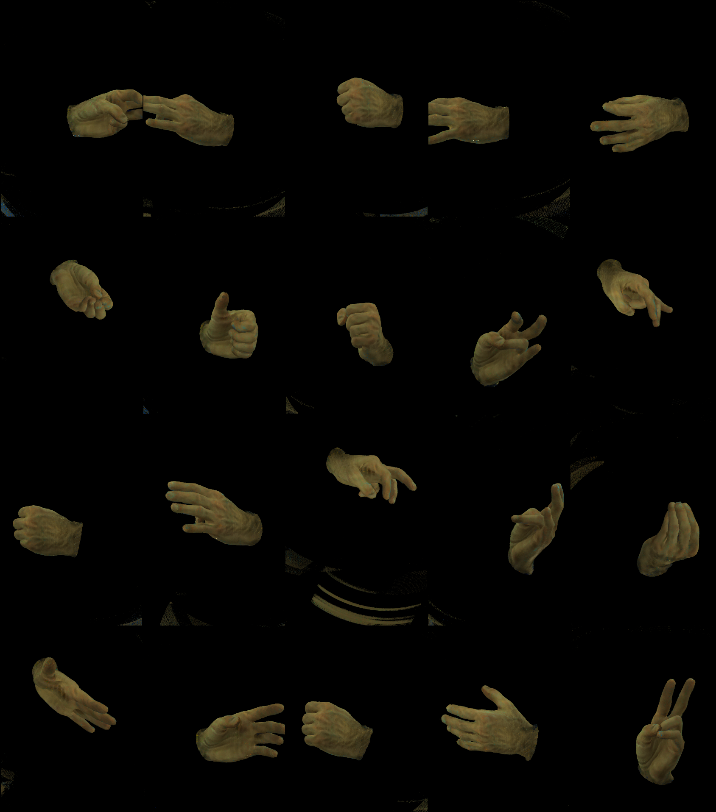

NeRF-based Hand Reconstruction
 

An implicit 3D reconstruction of a human hand from monocular and multi-view sequences, based on Interhand2.6m dataset.
Abstract
This work addresses the problem of reconstructing an animatable avatar of a human hand from a collection of images of a user performing a sequence of gestures. Our model can capture accurate hand shape and appearance and generalize to various hand subjects. For a 3D point, we can apply two types of warping: zero-pose canonical space and UV space. The warped coordinates are then passed to a NeRF which outputs the expected color and density. We demonstrate that our model can accurately reconstruct a dynamic hand from monocular or multi-view sequences, achieving high visual quality on the Interhand2.6m dataset.
Method

Architecture of HumanNeRF, adapted to human hand setting instead of full body.
Architecture of LiveHand, reimplemented from scratch.
- Zero-pose canonical space warping of 3D points - adapted the approach of HumanNeRF to the hand setting instead of full body
- UV space warping of 3D points (texture coordinates + distance to the mesh), based on LiveHand - reimplemented from scratch
- Introduced perceptual loss (LPIPS) to enhance the visual quality; improved PSNR score by 14% over MSE-only loss
Results
 
Single view multi-pose sequence.
Reconstructed avatar in multiple poses from different views.